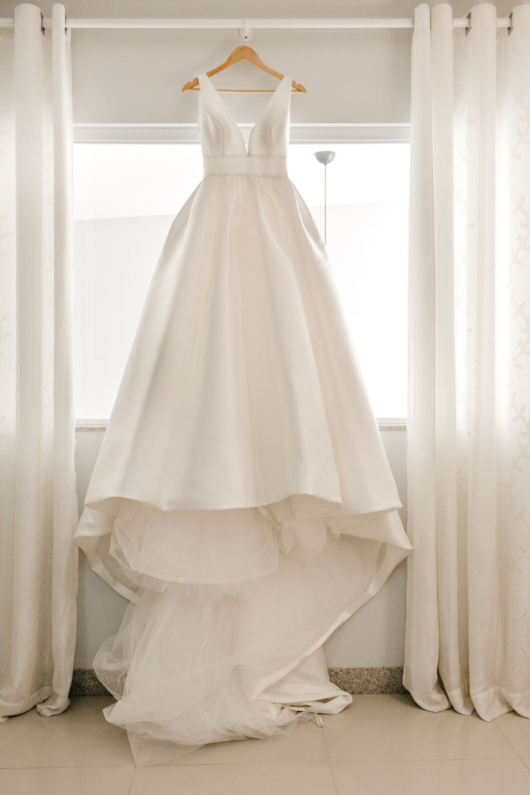
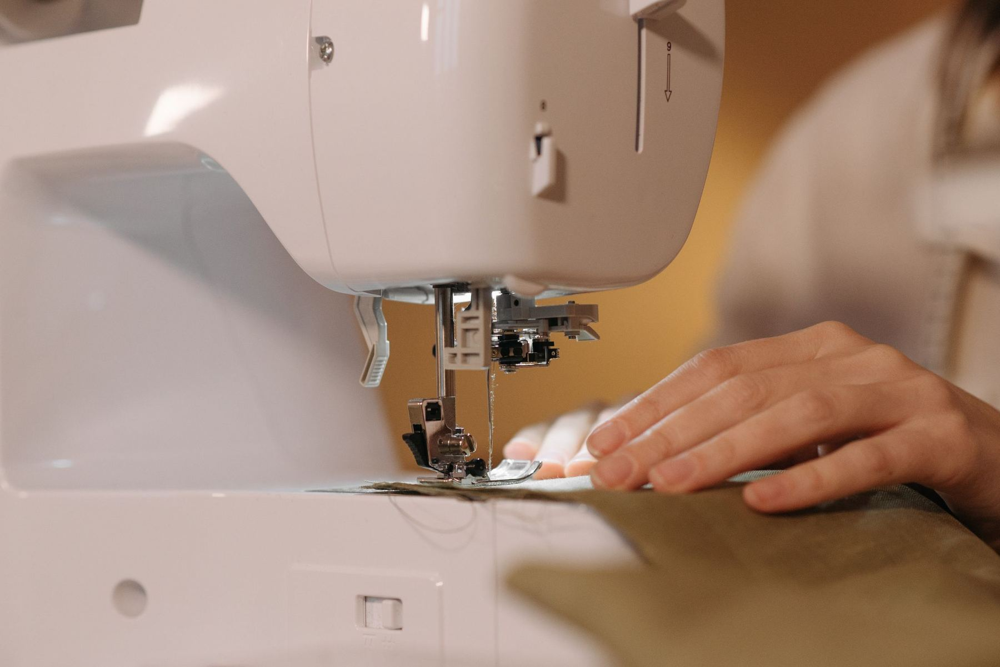
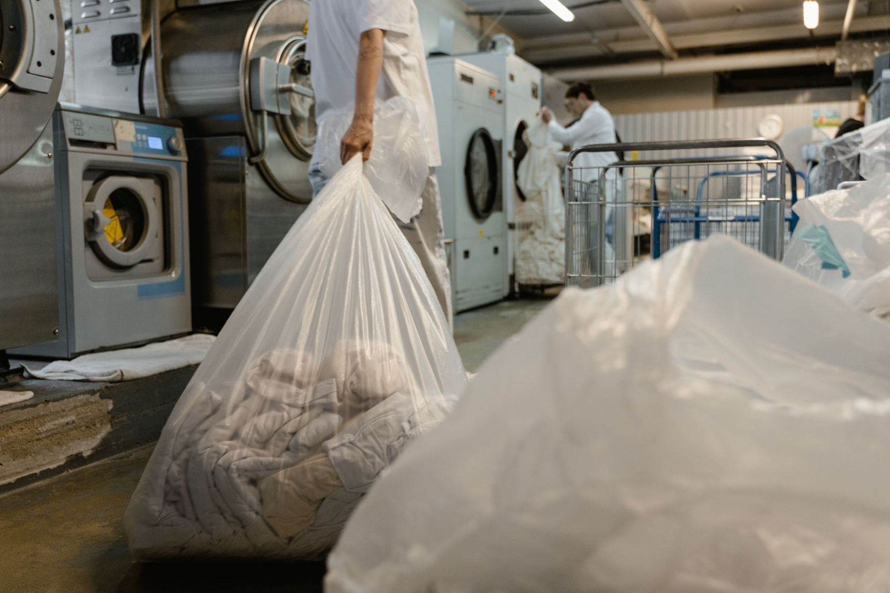

Most Popular
Professional Dry Cleaning
Shirts, suits, delicates. Back to crisp and fresh, every time.
A better standard of care for the wardrobe you love.
Professional Care • Precision Finishing • Effortless Convenience
From a single work shirt to a whole wedding party, we've got you covered.
Shirts, suits, delicates. Back to crisp and fresh, every time.

SpecialtyEvery dress is different. Pop in for a proper look and a quote.
Suits, uniforms, stubborn stains. Your work wardrobe, kept sharp.

Hems, zips, fitting adjustments. Fits right, every time.

Long-Term StorageSealed from light, dust and moisture. Years of protection.
Faded or worn? We've got the tools to bring it back.
Thoughtful care. A refreshingly simple experience.
Looking after your wardrobe should feel effortless. From convenient drive-up access at The Village Centre to the care given to every garment, we've made it easy to leave your clothes in good hands.
Pull up at The Village Centre and bring your garments in. Whether it's your weekly wardrobe refresh or a special piece that needs attention, getting started is easy.
No two garments are quite the same. We'll take the time to understand what each piece needs, discuss any particular concerns and help you choose the right care.
Behind every refreshed garment is careful handling and an eye for detail. We take pride in treating your clothes with the consideration they deserve.
Collect your freshly cared-for garments and enjoy that feeling of clothes ready to wear, without the work of doing it yourself.
Good service is something you notice. And remember.
We're proud to be part of the St Marys community. Here, you're more than another drop-off. We believe in friendly service, familiar faces and taking genuine pride in the work we do.
Life is busy enough. With drive-up access at The Village Centre, you can pull up, drop off your garments and get on with your day. No unnecessary parking hassles or carrying heavy bags across the centre.
From everyday essentials to suits, dresses, delicate fabrics and special occasion pieces, we offer a broad range of garment-care services to help you look after the clothes you value.
Rated 5.0 by our customers, we're grateful for the confidence our local community places in us. Every garment is another opportunity to deliver the thoughtful service that keeps people coming back.
The hands-on care every garment gets with us. Tap any image for a closer look.
A perfect 5.0 from 8 reviews on TrueLocal. No cherry-picked quotes, just the honest version.
Same day or 24 hours, exactly as promised.
Park right outside our door at The Village Centre.
5.0 from every TrueLocal review so far. Check it yourself.
No online bookings yet. Call, email, or just drop in.
Call 02 9673 3934, email gina.vic72@gmail.com, or drop into The Village Centre during opening hours.
The Village Centre, Charles Hackett Drive, St Marys NSW 2760. Northern side, drive-up access outside the main entrance.
Monday to Friday 9:00am – 5:30pm, Saturday 9:00am – 4:00pm, and Sunday 9:00am – 3:00pm.
Professional dry cleaning, corporate and work wear, wedding dress and bridal gown cleaning, alterations and repairs, suede and leather restoration, and airtight boxing for long-term garment storage.
Prices aren't listed online since every garment's different. Call or drop in for a quote, especially for bridal and specialty pieces.
Find our reviews on TrueLocal ↗, and feel free to leave your own.